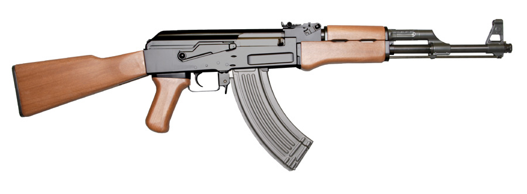
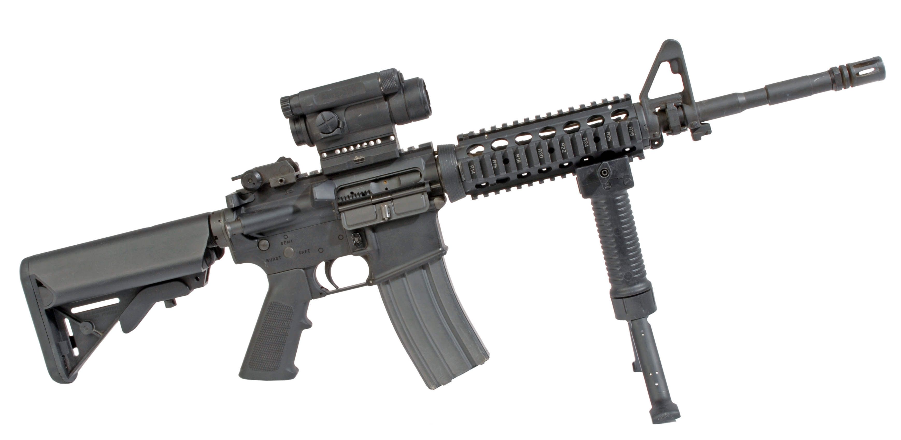
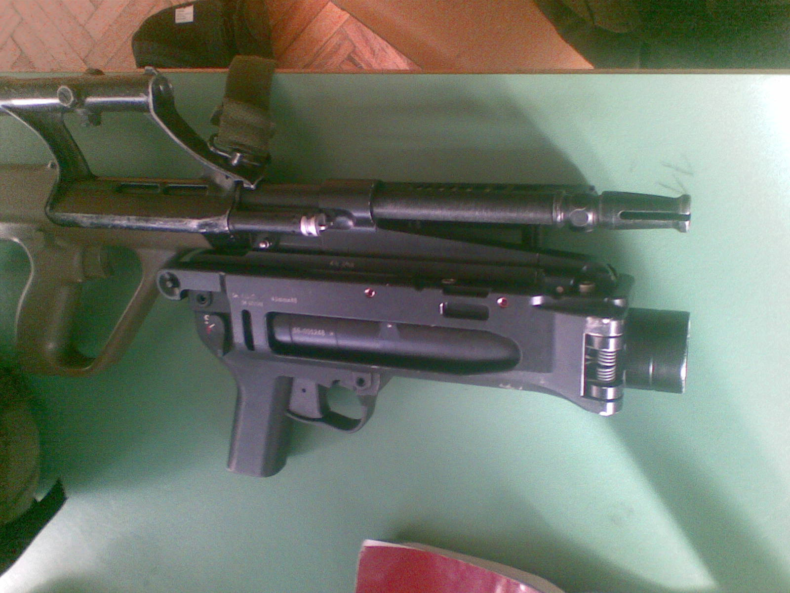
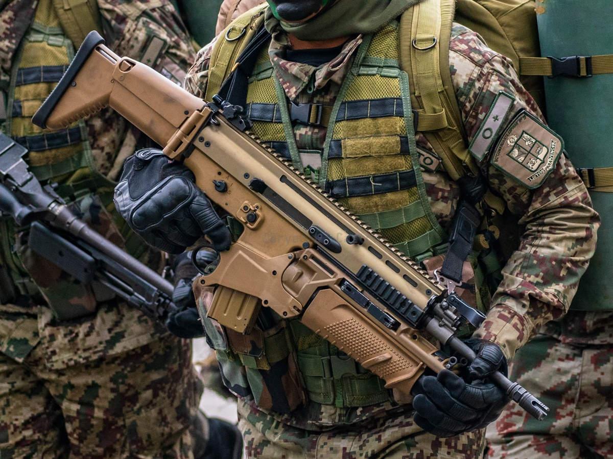

ASSAULT RIFLE
Role: All-Round Workhorse Primary
If you can only learn one weapon, learn the assault rifle. Solid damage, dependable range, and a magazine deep enough to win a two-versus-one make it the default pick on almost every map. It rewards trigger discipline: tap for range, burst for the mid, spray only when the enemy is already in your lap.
Arsenal Comparison
| Weapon | Damage | Fire Rate (RPM) | Magazine | Reload (s) | Range (m) | Recoil (1–10) | Price ($) |
|---|---|---|---|---|---|---|---|
| AK-47 “Redline” | 39 | 600 | 30 | 2.5 | 55 | 7 | 2700 |
| M4A1 “Standard Issue” | 33 | 700 | 30 | 2.3 | 52 | 4 | 2900 |
| AUG-A3 “Bullpup” | 34 | 680 | 30 | 2.4 | 50 | 5 | 3300 |
| SCAR-H “Heavyhand” | 45 | 550 | 20 | 2.7 | 58 | 6 | 3100 |
Weapon Files
AK-47 “Redline”

Combat Stats
- Fire Mode: Full-automatic
- Ammo Type: 7.62mm
- Wall Penetration: High
- Mobility: 92%
Description / Lore
The one-tap king. A single 7.62mm round to the head ends most fights outright, and the Redline punches clean through thin cover. The catch is a violent recoil climb — the AK belongs to players who have drilled the spray until it is muscle memory.
Unlock Requirement
Available by default — Variant “Redline” camo unlocks at 1,000 rifle kills.
M4A1 “Standard Issue”

Combat Stats
- Fire Mode: Full-automatic
- Ammo Type: 5.56mm
- Wall Penetration: Medium
- Mobility: 93%
Description / Lore
The rifle they teach you on. Lower damage than the AK, but a soft, predictable recoil pattern that makes long sprays feel effortless. If the AK is a scalpel in expert hands, the Standard Issue is a reliable tool in anyone's.
Unlock Requirement
Available by default — Variant “Ghost Grey” at Account Level 15.
AUG-A3 “Bullpup”

Combat Stats
- Fire Mode: Full-automatic (integrated optic)
- Ammo Type: 5.56mm
- Wall Penetration: Medium
- Mobility: 92%
Description / Lore
Its bullpup layout packs a full-length barrel into a compact frame, and the built-in optic turns mid-range duels into a formality. Costs a little more than the others, but you are paying for precision that holds up the moment you aim down sight.
Unlock Requirement
Reach Account Level 22 — Variant “Precision” at 200 scoped kills.
SCAR-H “Heavyhand”

Combat Stats
- Fire Mode: Full-automatic
- Ammo Type: 7.62mm
- Wall Penetration: High
- Mobility: 90%
Description / Lore
A battle rifle wearing an assault rifle's coat. The Heavyhand hits harder and reaches farther than anything else on the rack, but a 20-round magazine and a slower cadence mean every trigger pull has to count. Half rifle, half marksman weapon.
Unlock Requirement
Earn 40 multi-kills with rifles — Variant “Ironclad” at Level 30.
Signature Showcase — AK-47 Redline
Field footage: the long-stroke gas piston that makes the AK so brutally reliable.
External Intel
- Reference: Assault rifle (Wikipedia)
- Showcase video: How an AK-47 works (YouTube)